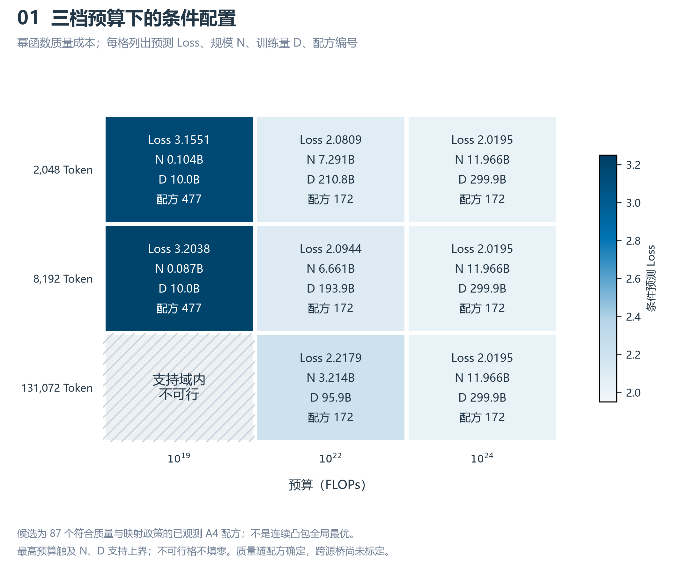
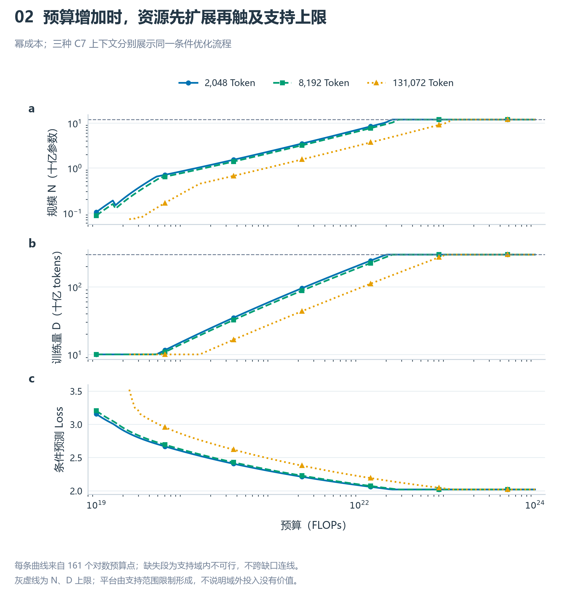
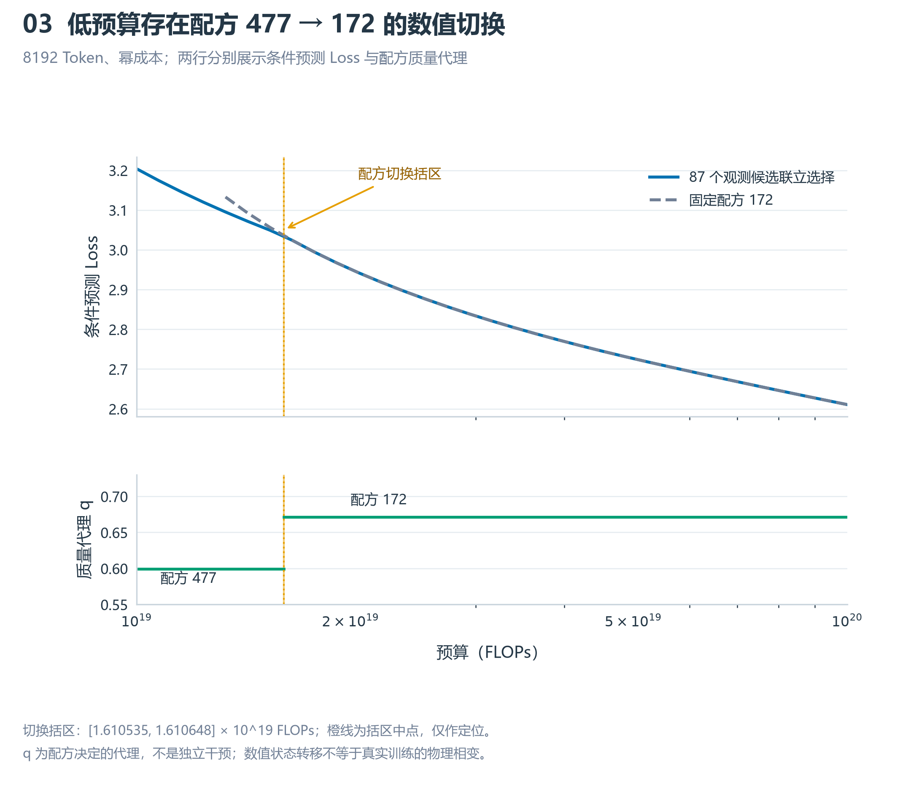
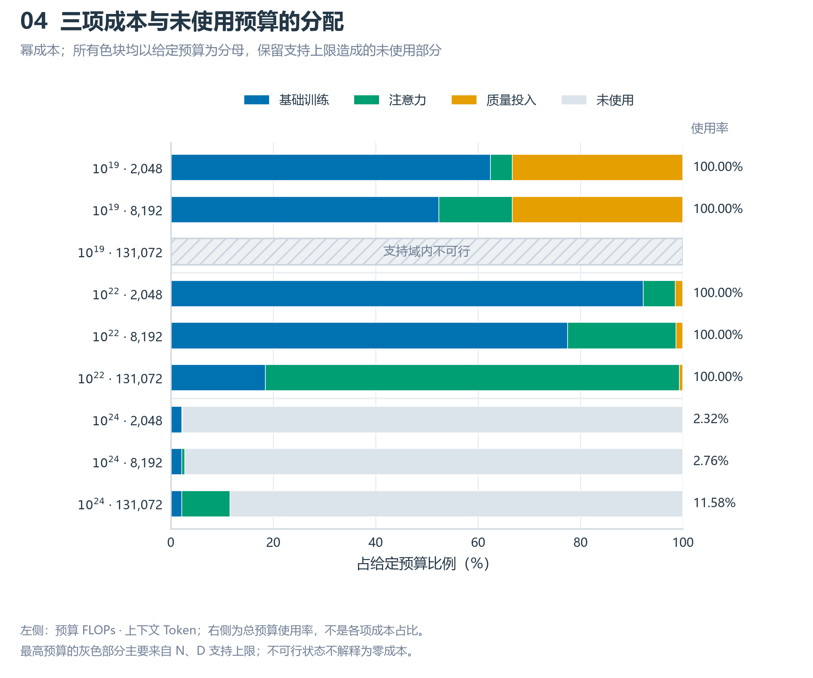
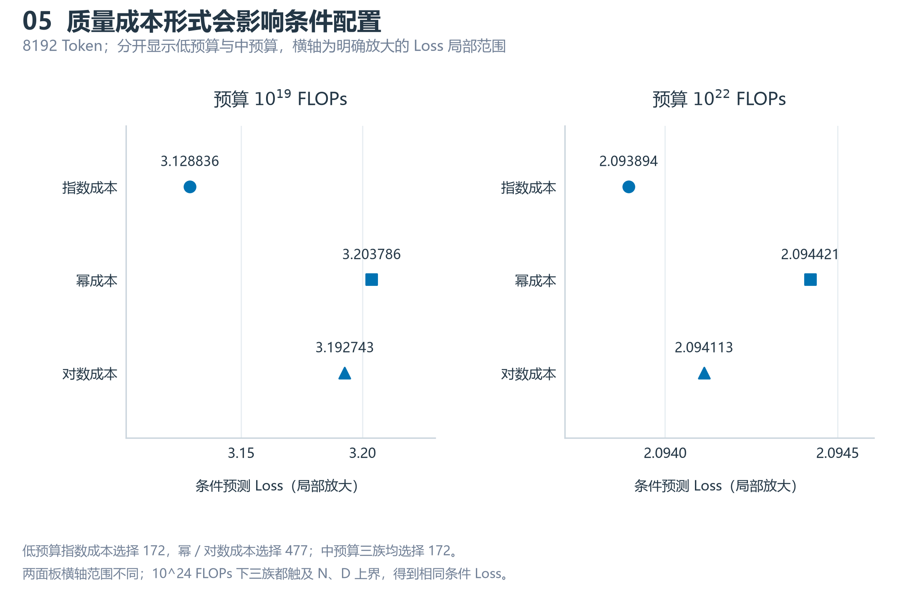
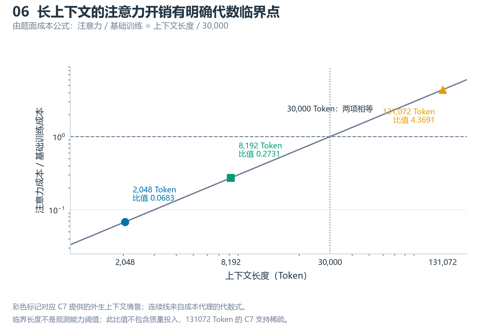
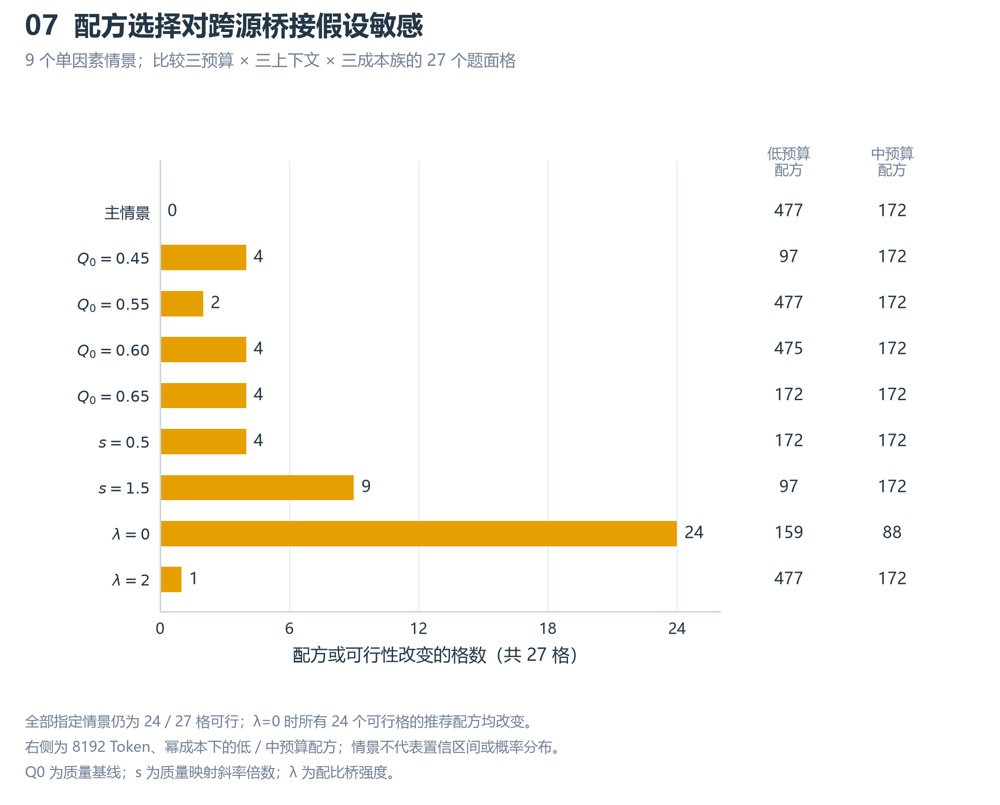
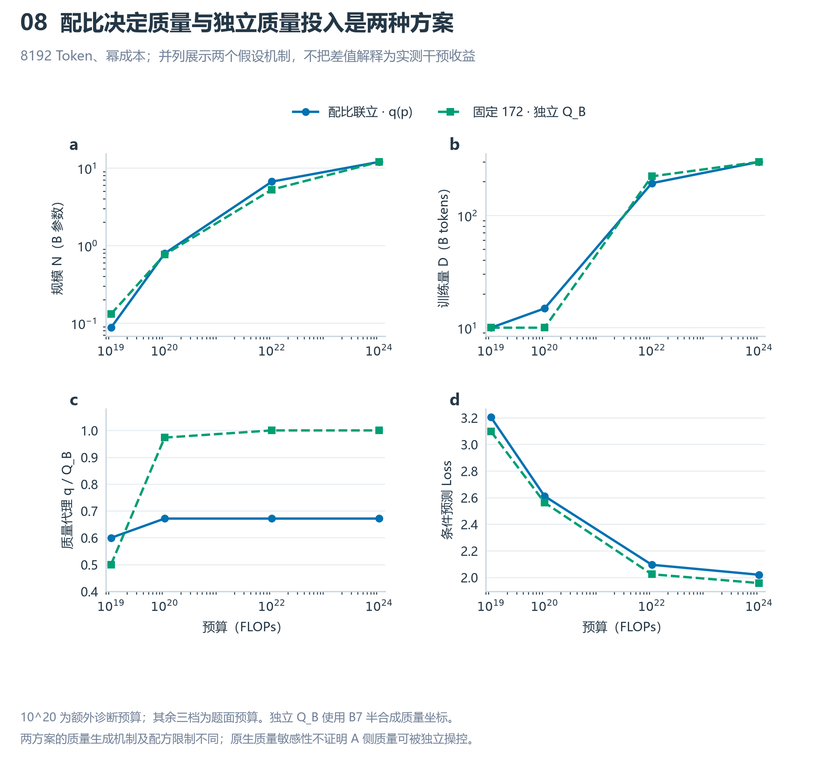
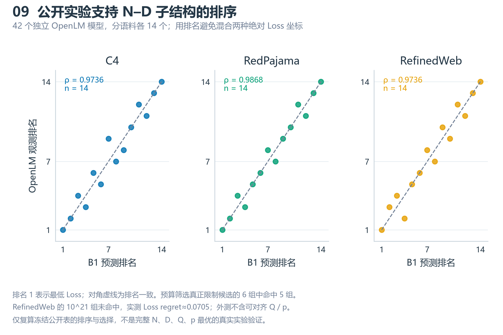

Q3 结果图册
main @ b789e3f 的冻结条件结果；与 Q1、Q2 同一绘图分支、同一版式。未标定跨源桥，最优仅限给定模型和候选。

候选为 87 个符合质量与映射政策的已观测 A4 配方；不是连续凸包全局最优。
最高预算触及 N、D 支持上界；不可行格不填零。质量随配方确定，跨源桥尚未标定。
PDF · SVG
每条曲线来自 161 个对数预算点；缺失段为支持域内不可行，不跨缺口连线。
灰虚线为 N、D 上限；平台由支持范围限制形成，不说明域外投入没有价值。
PDF · SVG
切换括区：[1.610535, 1.610648] × 10^19 FLOPs；橙线为括区中点，仅作定位。
q 为配方决定的代理，不是独立干预；数值状态转移不等于真实训练的物理相变。
PDF · SVG
左侧：预算 FLOPs · 上下文 Token；右侧为总预算使用率，不是各项成本占比。
最高预算的灰色部分主要来自 N、D 支持上限；不可行状态不解释为零成本。
PDF · SVG
低预算指数成本选择 172，幂 / 对数成本选择 477；中预算三族均选择 172。
两面板横轴范围不同；10^24 FLOPs 下三族都触及 N、D 上界，得到相同条件 Loss。
PDF · SVG
彩色标记对应 C7 提供的外生上下文情景；连续线来自成本代理的代数式。
临界长度不是观测能力阈值；此比值不包含质量投入，131072 Token 的 C7 支持稀疏。
PDF · SVG
全部指定情景仍为 24 / 27 格可行；λ=0 时所有 24 个可行格的推荐配方均改变。
右侧为 8192 Token、幂成本下的低 / 中预算配方；情景不代表置信区间或概率分布。
Q0 为质量基线；s 为质量映射斜率倍数；λ 为配比桥强度。
PDF · SVG
10^20 为额外诊断预算；其余三档为题面预算。独立 Q_B 使用 B7 半合成质量坐标。
两方案的质量生成机制及配方限制不同；原生质量敏感性不证明 A 侧质量可被独立操控。
PDF · SVG
排名 1 表示最低 Loss；对角虚线为排名一致。预算筛选真正限制候选的 6 组中命中 5 组。
RefinedWeb 的 10^21 组未命中，实测 Loss regret≈0.0705；外测不含可对齐 Q / p。
仅复算冻结公开表的排序与选择，不是完整 N、D、Q、p 最优的真实实验验证。
PDF · SVG